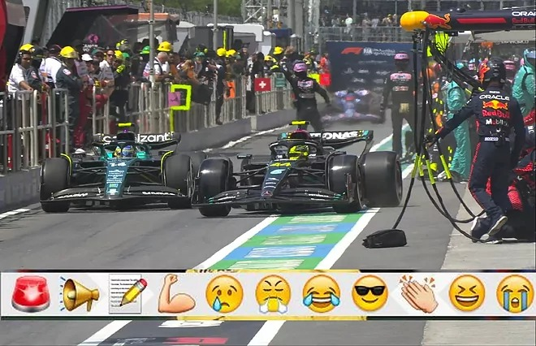
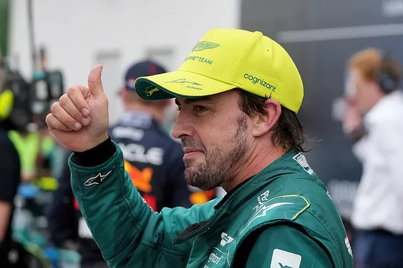
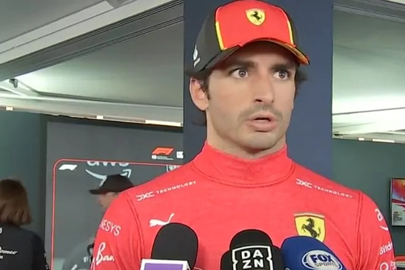
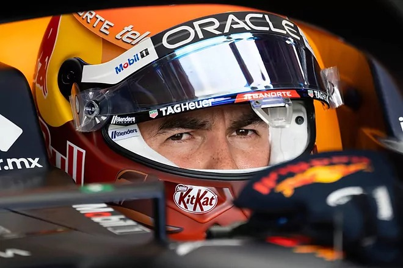

Hamilton-Alonso, a codazos como en los viejos tiempos
El duelo impresionante a la décima entre dos gigantes como Hamilton y Alonso fue espectacular en el primer 'stint' de carrera.
La salida del inglés, mejor dicho de su Mercedes, fue imperial, porque el tiempo de reacción respecto a Alonso fue calcado pero emparejó el coche en 200 metros.
No se marchó el inglés ni un segundo hasta la parada, donde casi chocan en el 'pit lane' buscando Fernando 'su' segunda plaza.
Pero en el giro 22, la pasada del asturiano tras salir de la chicane como un cohete, fue monumental, para acabar de nuevo juntos al final, con mejor goma el británico (medio por duro) en otro duelo monumental.
"Dejádmelo a mí", dijo Alo. Lo mejor de la carrera: nos pueden dar un año inolvidable por el subcampeonato.

Fernando Alonso: "Ha sido nuestra carrera más competitiva, estamos más cerca de Red Bull"
Fernando Alonso es el quinto piloto con más podios de la historia de la Fórmula 1.
Suma 104 podios y sólo tiene por delante a Prost (106), Vettel (122), Schumacher (155) y Hamilton (191).
Historia de este deporte que sustenta con acciones como la de esta noche. El asturiano pasó a Hamilton, presionó como había prometido a Verstappen y sumó el sexto podio en ocho Grandes Premios de la temporada.
La carrera por el Mundial, si Max lo permite, continúa.
El asturiano ha explicado cómo se ha sentido a lo largo de este Gran Premio: "Ha sido una carrera muy intensa, 70 vueltas de clasificación.
Hemos empezado mal en la salida, Hamilton me ha pasado, pero he conseguido adelantarlo después. He ido muy bien, rápido con el neumático duro y me he distanciado de él.
Al final he tenido que empujar al límite, hemos competido contra rivales fortísimos"

Carlos Sainz: "Hemos acabado 4º y 5º, que era lo que teníamos que hacer"
Ferrari ha planteado una buena estrategia de carrera en el circuito Gilles Villeneuve.
Sus pilotos, que salían décimo (Charles Leclerc) y undécimo (Carlos Sainz), no eran capaces de recortar posiciones tras la salida, por lo que el equipo aprovechó la bandera amarilla provocada por Russell para hacer lo contrario al resto: quedarse en pista.
Esa decisión les ayudó a ascender hasta la cuarta y quinta posición, sin embargo, tendrían que entrar más tarde. Ambos pilotos mantuvieron un buen ritmo que les permitió pasar por boxes sin perder su lugar.
Cambiaron los neumáticos medios por un compuesto más duro, una decisión que el propio Carlos considera que fue la correcta.

Checo Pérez va contra sus 'fantasmas' en el GP de Canadá
El rendimiento de Sergio Pérez no levanta desde que fue remontado por Max Verstappen en el Gran Premio de Miami, cuando Checo arrancó desde la pole position y el neerlandés le arrebató la victoria dese el noveno lugar.
Después de ahí, la Fórmula 1 se movió hacia Europa donde se corrió en Mónaco, donde Checo Pérez terminó fuera de los puntos, y Barcelona, donde acabó cuarto.
Este fin de semana la F1 volvió a Norteamérica para el Gran Premio de Canadá, pero los resultados siguen mal para el piloto de Red Bull.
Con una mala estrategia de neumáticos en la Qualy 2, Pérez largará en el puesto 12 en la carrera del domingo en el Gilles Villeneuve, un circuito que no se le da mucho.